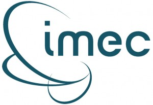
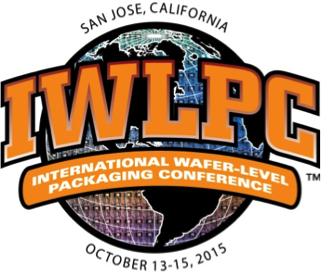

Current Issue
July • August 2015; Volume 19, Number 4
Cover PhotoPackage size continues to shrink while the demand for increased performance and reduced power dominate the market. The preferred solution is one that extends advances in IC technology beyond the fab to include 2.5D and 3D assembly. New high-UPH processes using thermocompression bonding (TCB) enables this next-generation of cost-effective high-performance computing and graphics products.
Photo courtesy of Kulicke & Soffa
Read the issue Download PDF SubscribeTech Briefs
Submit Technology Newsby Debra Vogler, Senior Technical Editor
EVG targeting vacuum encapsulation/bonding needed for next-gen MEMS
Dr. Thomas Uhrmann, Director of Business Development, EV Group
EV Group is targeting vacuum encapsulation and bonding processes needed for next-generation MEMS to meet the growing demand for devices that service applications for the Internet of Things (IoT) and wearable sensors. Vacuum sealing of MEMS devices is driven by three primary issues: 1) Reducing power consumption caused by parasitic drag on resonators (e.g., gyroscope applications); 2) Reducing convection heat transfer (e.g., microbolometers, temperature-controlled devices; and 3) Preventing corrosion or other types of interaction with O2 or H2O (e.g., parts with exposed Al or AlN). ...>>
Nordson ASYMTEK launches a programmable tilt + rotate dispenser
Garrett Wong, Product Manager, Nordson ASYMTEK
Nordson ASYMTEK recently announced a new Programmable Tilt + Rotate 5-Axis Fluid Dispenser that enables a jet to dispense using 5 axes of automated control instead of only 3 axes. The company noted that additional X and Y tilt modes enable dispensing from a vertical position and at varying tilt angles along all four sides of a device, and up the side of a substrate or component. This capability is particularly important for 3D packaging applications. ...>>
IRT Nanoelec, Leti’s partners demo 3D stacking in scalable SoCs
In advance of SEMICON West, IRT Nanoelec in conjunction with CEA-Leti and its partners, STMicroelectronics and Mentor Graphics, announced the realization of a 3D chip called “3DNoC” to demonstrate the use of 3D stacking technology in scalable, complex digital systems-on-chip ...>>
Industry Spotlight
Submit Industry Spotlight Imec and SPTS Technologies, an Orbotech Company, Collaborate on Critical Processes for 3D IC Wafer Stacking
San Francisco – July 14, 2015 – Nano-electronics research center imec and SPTS Technologies, an Orbotech Company (NASDAQ: ORBK) company and supplier of advanced wafer processing solutions for the global semiconductor and related industries, announced at SEMICON West their collaboration on critical processes for 3D IC wafer stacking. They are jointly developing a highly accurate, short cycle-time dry silicon removal and low temperature passivation solution for through-silicon via-middle processing and thinning of the top-wafer in wafer-to-wafer bonding ...>>IEEE Components, Packaging and Manufacturing Technology Society Honors 2015 Award Winners
Piscataway, N.J. (May 28, 2015) – The IEEE Components, Packaging and Manufacturing Technology Society (CPMT) recognized its 2015 award winners at the 65th Electronic Components and Technology Conference (ECTC), 28 May 2015, San Diego, California, ...>>SMTA Announces Retirement of JoAnn Stromberg
Minneapolis, MN, May 12, 2015 - The SMTA announced today that JoAnn Stromberg, the association’s Executive Administrator for the past 29 years, has announced plans to retire at the end of December 2015. ...>>Industry Events
The Burn-in and Test Strategy (BiTS) Workshop will hold its first-ever international event in Shanghai on October 21, 2015. Over the course of its sixteen-year history, BiTS has established itself as the preeminent event for test and burn-in consumables, test cell integration, and test operations. BiTS Shanghai will highlight what is Now & Next in the test and burn-in of semiconductors. ...>>
Milan, Italy - September 17-18, 2015 - European MEMS Summit 2015 - Sensing the Planet, MEMS for Life Because MEMS are in our future. With the increased use of MEMS devices in a diverse and growing list of products – telephones, cars, wearables, etc. – the development of MEMS technology has become critical to the evolution of microelectronics products. The European MEMS Summit 2015 will offer exciting opportunities to learn about the most recent advances in the technology from the world’s leading experts in the domain. ...>>
 San Jose, CA, July 17, 2015 – Chip Scale Review and the SMTA are pleased to announce keynote speakers and panels for the 12th annual IWLPC – Interconnecting WLP, MEMS & 3D Integration.
Keynote Address - Day One: High Density Fan-Out: Evolution or Revolution, by Rama Alapati, Director, Package Architecture & Customer Technology (PACT) at GLOBALFOUNDRIES Keynote Address - Day Two: 2.5D/3D IC – Examining Low Cost Alternatives, by Sitaram Arkalgud, VP, 3D Porfolio & Technologies at Invensas ...>>
For more information visit www.iwlpc.com